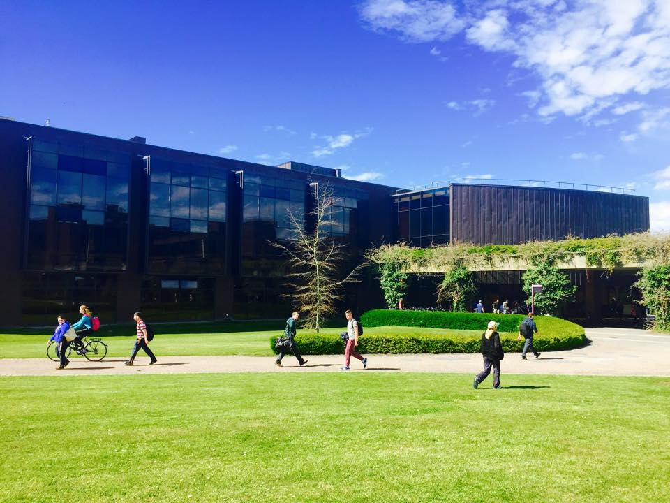

Glucksman Library & Information Service Building

Useful Information
General Information
The Glucksman Library was completed in 1997. With an area of 9,170m2, the building is home to members of the Library and Information Services Division and the Information Technology Division. As well as housing general access books, the Library holds several rare collections of books and coins. The building includes the bulk of the University's study stations, a large number of computer stations, a spacious training room and the Plaza Café.
Glucksman Library Website
Click to view more information about the Library, including how to search for books and journals.
Glucksman Library WebsitePlaza Café
Located in the Glucksman Library, the Plaza Café is a great venue if you want a break from study to enjoy a coffee and snack. Hot food and sandwiches are available throughout the day.
Nearest Car Park

Car Park 17: Pay Car Park
Guide Me There
Car Park 18: Staff Car Park
Guide Me There
Car Park 20: Free Car Park
Guide Me There